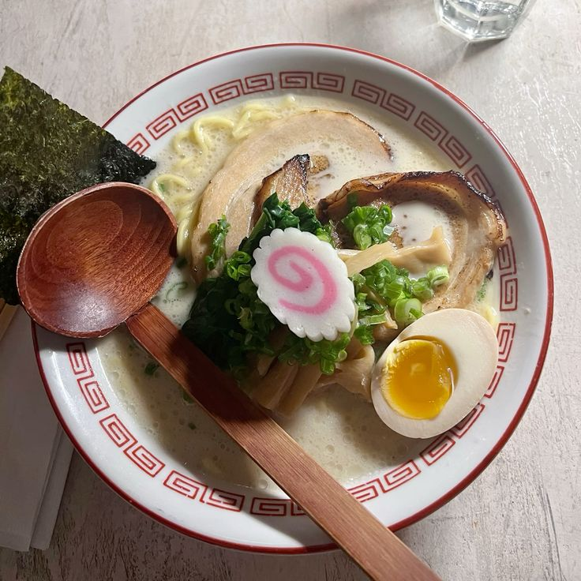

Tout savoir sur les Ramen
Histoire, styles, recettes et lieux incontournables. Des bouillons laiteux de Kyushu aux miso de Hokkaido : comprendre, choisir et savourer.
Styles emblématiques
- Tonkotsu — Bouillon d’os de porc, riche et onctueux (Fukuoka).
- Miso — Généreux, légèrement sucré‑salé (Sapporo).
- Shoyu — Base sauce soja, parfum équilibré (Tokyo).
- Shio — Clair, délicat, salinité maîtrisée.
- Tsukemen — Nouilles à tremper dans une sauce concentrée.
Le bol parfait
Tare (assaisonnement), bouillon (poulet/porc/poisson), nouilles (fermes ou non), toppings (chashu, œuf mariné, menma, nori) : l’équilibre fait la magie.
Repères utiles : kaedama (supplément de nouilles), ajitama (œuf mariné), negi (cive).